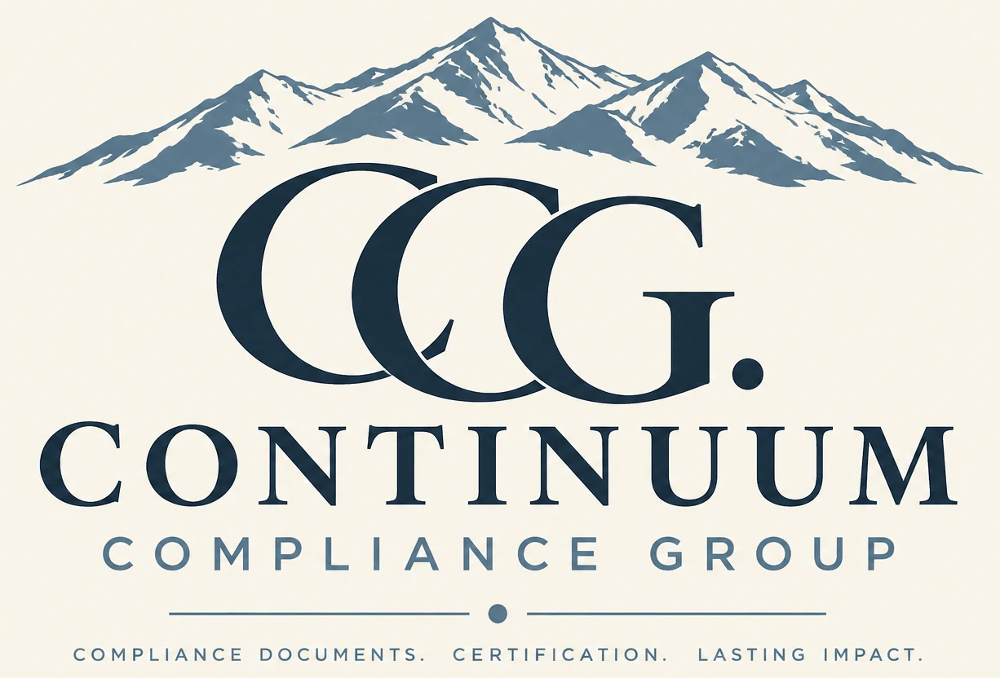

Continuum Compliance Group helps sober living operators close the gap between where their documentation stands today and what Colorado’s new BHA licensure rules require, before certification becomes a problem instead of a formality.
Continuum Compliance Group is a compliance consulting firm built for one purpose: helping Colorado sober living and recovery residence operators get and stay licensed under the state’s new rules. We run gap analyses against Chapter 16, build the documentation operators are missing, and walk them through exactly what the Behavioral Health Administration will expect when third-party certification (ORH-C, NARR) stops being enough.
Colorado is replacing third-party certification with direct BHA licensure in July, under the Chapter 16 rules passed as SB26-113. That’s not a paperwork update. It’s a different regulatory body, a different standard, and a deadline that doesn’t move for operators who are behind. We started Continuum Compliance Group because we watched operators find this out too late, scrambling to build a compliance file from scratch with weeks left on the clock. Under Beecon Works, we’re already doing this work daily for our first client.
We handle the parts of licensure that eat your time and your attention: a full crosswalk of your current documentation against Chapter 16 requirements, a clear list of what’s missing, and the templates and support to close those gaps before you’re in front of the state. That includes public comment support on the new rules, policy and procedure documentation, and a straight assessment of where you stand right now.
Your current ORH-C certification doesn’t disappear the moment Chapter 16 takes effect, and you don’t have to choose between maintaining it and preparing for BHA licensure. We help operators keep their existing certification in good standing through the transition while building the Chapter 16 file in parallel, so there’s no gap in your standing and no last-minute scramble when the state takes over. If you’re not sure what your ORH-C certification requires between now and July, that’s part of the gap analysis too.
Because the deadline is fixed and the rules aren’t optional. Operators who wait until certification moves to the BHA in July to find out what’s missing from their file will be doing it under pressure, possibly while still trying to run a house full of residents. We do the gap analysis now, while there’s still time to fix what’s wrong, so you walk into licensure with a file that’s already built instead of one you’re building on the fly.